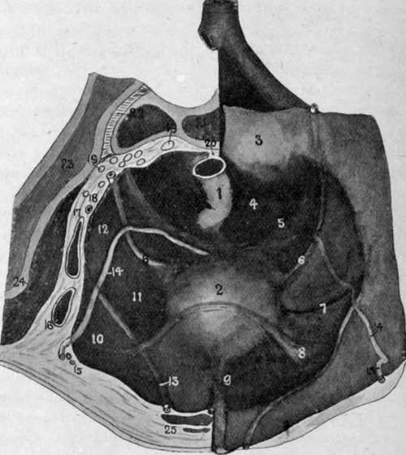

The Bladder
Description
This section is from the book "Surgical Anatomy", by John A. C. MacEwen. Also available from Amazon: Surgical Anatomy.
The Bladder
While for some time after birth the Bladder is an abdominal organ, and spindle-shaped, in the adult it occupies the pelvis, although it rises into the abdomen when distended. The bladder lies between the symphysis in front and the rectum or vagina behind. It rests in a triangular space, formed by two lateral walls, composed of levator ani and internal obturator, covered by pelvic fascia, which converge anteriorly to the pubic symphysis and retropubic fat. Posteriorly and below, the third side is formed by seminal vesicles, vasa deferentia, and recto-vesical layer of pelvic fascia, or, in the female, by anterior vaginal wall and cervix uteri. Thus, the lateral walls and base of the bladder slope inwards and downwards to the urethral orifice, which is the lowest and also the most fixed portion of the bladder, being held in position by the pelvic fascia. When the bladder is much distended, the orifice is slightly depressed, while, if the rectum be distended, it is slightly raised. Normally, it lies behind and slightly below the level of the upper margin of the symphysis pubis. The upper surface of the bladder and its peritoneal relations vary according as it is full or empty. The upper surface of the contracted bladder is convex and triangular in outline, the apex lying behind the symphysis, and giving attachment to the urachus, while the postero-lateral angles mark the positions of the ureters.
The peritoneum, covering the urachus in front, forms the anterior false ligament, the reflection being situated just below the upper border of the symphysis ; while laterally, being reflected about the level of the ilio-pectineal lines, it forms the lateral false ligaments ; and posteriorly, projecting backwards, as already described, in a fold, it forms the sacro-genital fold, and then descends into the pelvis, forming the recto-vesical pouch, which extends to within an inch of the base of the prostate. When the bladder is distended, the peritoneum, in the position of the anterior false ligament, is raised, exposing, perhaps, a couple of inches of uncovered bladder above the level of the symphysis (through which the distended bladder may be tapped), and the lateral line of reflection is also raised. Speaking generally.
when the apex of the bladder is 2 inches above the pubic crest, the peritoneum will be raised about ¾ inch above it, while, when the apex is midway between the umbilicus and pubes, the peritoneum may be 1½ to 2 inches above it. Normally, the bladder will hold about a pint, but in great distension, when the organ reaches the level of the umbilicus, or even higher, it may contain 2 or 3 quarts. The sacro-genital fold then disappears, the surplus peritoneum being taken up by the increasing size of the bladder ; but the level of the rectovesical pouch does not appreciably alter, save, perhaps, where the rectum is distended. An equilateral triangle is formed by the prostate as an apex, the vesiculi seminales as two sides, and the recto-vesical fold as base, whose sides are about 1½ inches long (external trigone). The bladder and rectum are adherent over this area, through which, therefore, the bladder may be tapped per rectum. The upper surface of the bladder is related in the male to the pelvic colon and small intestine, and in the female to the uterus ; the lateral aspect is related to the levator ani, and the internal obturator muscles, parietal pelvic fascia, and vesico-prostatic venous plexus. Below and in front, the pubic bones, symphysis, retropubic fat, vesical layer of pelvic fascia, and anterior vesical veins are in relation ; while the base is related to the rectum, with seminal vesicles, vasa deferentia, and recto-vesical fascia intervening in the male, and to the shallow utero-vesical pouch, cervix, and vagina in the female.
Fig. 32.-Diagram of Male Pelvis. Viewed from Above. On the Right Side the Peritoneum has been folded over, displaying the Ridges and Fossae, while on the Left the Pelvis is shown cut in Section.
(Modified from Cunningham.)
1. | Rectum. | 14. | Vas deferens. |
2. | Bladder. | 15. | Deep epigastric vessels. |
3. | Sacral promontory. | 16. | External iliac artery. |
4. | Pararectal fossa. | 17. | External iliac vein. |
5. | Sacro- or gentto-rectal fold. | 18. | Internal iliac artery and obturator nerve. |
6. | Ureter. | 19. | Sacral nerves. |
7. | Vesical artery. | 20. | End of pelvic mesocolon. |
8. | Plica transversa vesicas. | 21. | Sacrum. |
S'- | Urachus. | 22. | Sacro-iliac synchondrosis. |
10. | Trigonum femorale. | 23. | Ilium. |
11. | Paravesical fossa. | 24. | Iliacus muscle. |
12. | Obturator fossa. | 25. | Rectus muscle, with pyramidalis muscle in front and urachus to inner side. |
13. | Obliterated hypogastric artery. |
The retropubic fat and cellular tissue is of importance surgically, as if, in doing a suprapubic cystotomy, this tissue be burrowed into, a pocket is easily formed in which material may collect and sepsis be set up, which, if it spreads, may lead to the death of the patient.
The muscular coat of the bladder is composed of a reticulated network of bundles, which become more marked in cases of hypertrophy, producing farticulation. In cases of distension the intervening mucous membrane may yield, producing a sacculated bladder. In cases of hypertrophy the change is most marked in the anterior wall. The bladder is lined internally with mucous membrane, which, particularly when the organ is empty, is thrown into folds by the underlying muscular bundles to which it is but loosely attached by lax submucous tissue.
The internal trigone forms an equilateral triangle at the base of the bladder, whose sides are about 1½ inches long, and here the mucous membrane is smooth, firmly attached to the underlying muscle, and slightly raised above that bounding its sides. At the apex of the trigone is the urethral orifice, surrounded by a slightly raised ring of mucous membrane (annulus urethralis), while at each of the basal angles of the triangle a ureter opens, having traversed the bladder wall obliquely for ¾ inch. The internal and external trigones practically coincide. A fine linear fold, called the uvula vesicae, runs from the urethral orifice backwards towards the centre of the base of the triangle, while it is also continued forward through the urethral orifice to the floor of the prostatic urethra, forming the verumontanum. This is most marked in cases of enlarged prostate, being situated over the middle lobe. The depression bounding either lateral wall of the triangle is called a paratrigonal fossa, while that bounding the base is called the retro-ureteric fossa. This latter often becomes large in enlarged prostate, contains a quantity of ammoniacal urine which the patient cannot pass (residual urine), and sometimes a calculus, and is called a posterior prostatic pouch.
Continue to: